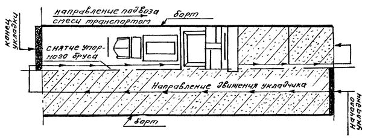
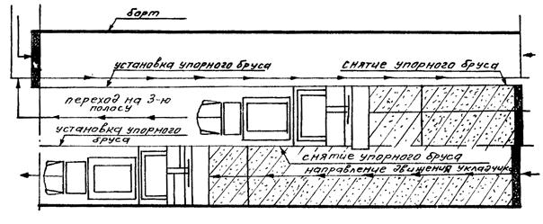

КОМПЛЕКС ПЕРСПЕКТИВНОГО РАЗВИТИЯ
г. Москвы
УПРАВЛЕНИЕ ВНЕБЮДЖЕТНОГО ПЛАНИРОВАНИЯ РАЗВИТИЯ ГОРОДА
УПРАВЛЕНИЕ РАЗВИТИЯ ГЕНПЛАНА НИИМОССТРОЙ
ВЕДОМСТВЕННЫЕ СТРОИТЕЛЬНЫЕ НОРМЫ
ИНСТРУКЦИЯ
по устройству и ремонту дорожных покрытий с применением литого асфальтобетона
ВСН 60-97
МОСКВА 1997
Инструкция по устройству и ремонту асфальтобетонных покрытий из литого асфальтобетона разработана д.т.н. В.Н. Кононовым (руководитель разработки), М.И. Клейманом при участии В.К. Кузнецова, к.т.н. А.П. Скрыльника (АО "Инженерный центр").
Инструкция обобщает накопленный за период с 1974 по 1996 гг. опыт строительства и эксплуатации асфальтобетонных покрытий по литьевой технологии.
Инструкция составлена с учетом новых строительных норм на проектирование дорожных одежд с асфальтобетонным покрытием и технических условий на смеси асфальтобетонные литые и литой асфальтобетон, разработанных в период 1994-1996 гг.
Инструкция согласована с Управлением жилищно-коммунального хозяйства и благоустройства Правительства г. Москвы, Институтом Мосинжстрой, АО "Асфальтобетон".
|
Комплекс перспективного развития г. Москвы |
Ведомственные строительные нормы |
ВСН 60-97 взамен |
|
Управление внебюджетного планирования развития города Управление развития Генплана |
Инструкция по устройству и ремонту дорожных покрытий с применением литого асфальтобетона |
1.1. Настоящая инструкция распространяется на работы по устройству и ремонту (капитальному и текущему) дорожных покрытий с применением литого асфальтобетона, изготовляемого в соответствии с ТУ 400-24-158-89 на асфальтобетонных установках со смесителями принудительного перемешивания типа ДС-117-2Е, Д-645-2Г, Тельтомат 240В, ТВА 200/240 и др.
1.2. Литые асфальтобетонные смеси применяют при устройстве и ремонте:
- покрытий и слоев монолитных дорожных конструкций, проектируемых из условия работы асфальтобетонного покрытия как, упругой плиты, лежащей на упругом основании;
- покрытий на мостах, эстакадах, путепроводах и тротуарах;
- покрытий в зоне межрельсовых пространств трамвайных путей, а также на полосах примыкания путей к проезжей части улиц.
|
Внесены НИИМосстроем |
Утверждены "22" июля 1997 г |
Дата введения |
1.3. Покрытия из литого асфальтобетона устраивают на участках дорог, требующих по условиям эксплуатации повышенных показателей в части износостойкости, водонепроницаемости, деформационных и фрикционных свойств, а также для обеспечения круглогодичного, непрерывного, безопасного и удобного движения автомобиля с заданными скоростями, сохранности дорог и дорожных сооружений, своевременного повышения технического уровня и эксплуатационных качеств дорог с учетом роста движения автомобилей.
1.4. Покрытия из литого асфальтобетона в трамвайных путях устраивают с целью пропуска по нему автомобильного транспорта, а также для предохранения от проникания воды внутрь путевой конструкции и улучшения внешнего вида путевого полотна.
1.5. Покрытия из литого асфальтобетона устраиваются по свежеуложенному и уплотненному слою из плотного асфальтобетона, уложенному с соблюдением продольного и поперечного уклонов и требуемой ровности с расчетом получения надлежащего взаимного сцепления обоих слоев и образования общего монолитного покрытия. В трамвайных путях - после окончания всех путевых и водоотводных работ и прокатки пути до начала дорожных работ.
1.6. Покрытия устраивают в сухую погоду: весной- при температуре окружающего воздуха не ниже 5°С, основание не должно быть промерзшим; осенью- не ниже +10°С, основание не должно быть влажным. При текущем ремонте допускается проведение работ при отрицательных температурах окружающего воздуха до минус 10°С, а ниже - только при аварийных ситуациях, в случаях возможной остановки движения транспорта, подготовки к массовым мероприятиям.
2.1. Производство работ по устройству дорожных покрытий с использованием литого асфальтобетона требует большого опыта и достаточного производственного навыка. Поэтому до начала работ следует произвести обучение инженерно-технических работников, рабочих-асфальтобетонщиков и машинистов-асфальтоукладчиков.
2.2. При производстве работ должен быть обеспечен непрерывный режим работы асфальтосмесительных установок, транспортных средств и асфальтоукладчиков. В связи с этим производительность смесительной установки, количество передвижных котлов и производительность асфальтоукладчика должны быть согласованы между собой. При этом следует иметь в виду, что асфальтосмесительные установки должны работать непрерывно, без остановок во избежание нарушения постоянства температурного режима приготовления смесей.
2.3. При укладке смеси в дорожное покрытие в состав проекта производства работ должна включаться циклограмма транспортирования смеси от АБЗ до объекта. В графике производства работ указывается требуемое количество передвижных котлов (автомобилей-самосвалов), время их прибытия на завод, количество рейсов на каждую машину, время начала и окончания работ, количество смеси.
2.4. Организация работ должна предусматривать движение передвижных котлов (автомобителей-самосвалов) со смесью навстречу строительному потоку, для исключения возможности переезда транспорта через края устраиваемого верхнего покрытия и движения по свежеуложенному слою.
2.5. До начала работ по укладке литой асфальтобетонной смеси на строительный объект должен быть доставлен горячий черный щебень [2] в количествах, необходимых для бесперебойной работы по втапливанию. Щебень целесообразно выгрузить в соответствующих объемах по длине трассы, равной сменной захватке.
2.6. При производстве работ без закрытия движения автомобильного транспорта место укладки смеси должно быть ограждено щитами, а с боковых сторон - металлическими конусами в соответствии с требованиями ГОСТ Р 50597-93 [4].
2.7. Бригада асфальтобетонщиков должна быть оснащена необходимым инвентарем и приспособлениями (приложение 2).
3.1. Подготовительные работы.
3.1.1. Устройство покрытия начинают с подготовительных работ [7], в состав которых входят:
а) при новом строительстве.
- установка в продольном направлении деревянного бруса длиной до 20 м ( высота бруса должна соответствовать толщине укладываемого слоя покрытия). Упорный деревянный брус, состоящий из отдельных звеньев длиной около 4 м каждое, прикрепляется с помощью гвоздей к нижнему слою покрытия. Установка звеньев производится по шаблону, фиксирующему ширину укладываемой полосы, или с использованием геодезических инструментов. По мере охлаждения уложенного слоя (до 70-75°С) звенья переставляются;
- установка и крепление штырей с последующей натяжкой проволоки или шнура (для работы автоматической следящей системы);
б) при ремонтно-дорожных работах:
В дополнение к вышеуказанным работам для нового строительства подготовительные работы начинают с:
- очистки основания от пыли и грязи механическими дорожными щетками, поливомоечными машинами или сжатым воздухом; просушки влажного основания горячим песком [3], при этом особое внимание должно уделяться очистке лотка проезжей части. В зимний период при текущем ремонте предусматриваются также работы по очистке ремонтируемых карт от пескосоляного наноса, снега, льда и пр.;
- проверки (с помощью геодезических инструментов) ровности ремонтируемого покрытия, продольных и поперечных уклонов, ширины проезжей части дороги и правильности установки люков колодцев подземных сооружений. При обнаружении отклонений от требований настоящей инструкции и проекта производят выравнивание нижележащих слоев укатываемой асфальтобетонной смесью и перестановку люков колодцев подземных сооружений на высоту проектной отметки покрытия;
- обрубки специальными приспособлениями или отбойными молотками краев ранее уложенной полосы литого асфальтобетона, а также мест входа и выхода фрезы (текущий ремонт), причем линия обрезки должна быть прямой.
Для обеспечения ровности устраиваемого верхнего слоя покрытия при устройстве поперечного шва сопряжения место обрубки устанавливается с помощью рейки. С этой целью рейка с уровнем накладывается внахлестку на уложенный слой. Место под рейкой, в котором начинается снижение толщины слоя, принимается за линию поперечной обрезки слоя;
- обработки подготовленного слоя ранее уложенной полосы (при проведении капитального ремонта) битумной эмульсией с расходом 0,3-0,4 л/м2 или жидким битумом с расходом 0,5-0,8 л/м2. Одновременно с этим производится также обработка всех выступающих мест конструкции: люков колодцев и дождеприемных решеток подземных сооружений, трамвайных путей и др. При разливе эмульсии не допускается ее концентрации в пониженных местах;
- регулировки люков колодцев подземных коммуникаций и приведения их в соответствие с проектной отметкой покрытия;
наращивания, в случае необходимости, колодцев с использованием металлических вкладышей или железобетонных сегментов. При установке дождеприемной решетки края ее должны быть ниже проектной отметки лотка с верховой стороны на 30 мм, а с низовой - на 20 мм; подход к решетке с верховой стороны должен иметь увеличение уклона на 2-3 м, а с низовой - на 0,5 м;
- разогрева уложенной полосы на ширину 10-15 см до 120-140°С с помощью тепловой энергии инфракрасного излучения при охлаждении уложенного в покрытие слоя литого асфальтобетона ниже 120°С;
- закладки и закрепления специальных блоков (бетонных, шлакобетонных или прессованных асфальтобетонных) в местах стыков рельсов трамвайных путей с внутренней, а при укладке смесей в местах сопряжении с проезжей частью - и с внешней стороны рельсов для обеспечения возможности проведения работ по затяжке болтов стяжных пластин без разрушения верхнего слоя покрытия.
3.2. Транспортирование смеси.
3.2.1. Транспортирование смеси к месту производства работ производится по типам смеси:
I и V - в специальных самоходных установках с котлом-термосом или бункером, оборудованных обогревом и мешалкой. При транспортировании должны обеспечиваться непрерывное перемешивание и температура смеси 180-240°С, а в необходимых случаях - порционная выгрузка с варьированием скорости выдачи смеси (приложение 1).
II и III- в автомобилях-самосвалах большой грузоподъемности, оборудованных утепленными кузовами. Продолжительность транспортирования смеси не должна превышать 30-40 мин;
IV- в автомобилях-самосвалах любой грузоподъемности.
3.2.2. Перед началом загрузки котел-термос (бункер) прогревается в течение 10 мин двумя подогревателями или форсункой (в зависимости от погодных условий время прогрева может быть увеличено). Запрещается включать сцепление привода мешалки перед запуском двигателя, а также привод мешалки до прогрева бункера и при наличии в нем остатков затвердевшей (не разогретой) смеси, препятствующей движению лопастей мешалки.
3.2.3. В процессе транспортирования общее время перемешивания смеси в передвижной установке должно быть не менее 20 мин.
3.2.4. Прибыв к месту укладки, самоходная установка устанавливается перед асфальтоукладчиком с таким расчетом, чтобы выпускной лоток при наклоне котла (бункера) был направлен в приемный бункер асфальтоукладчика. Выгрузка смеси производится при наклоне выпускного лотка и одновременной работы лопастной мешалки в котле. При текущем ремонте и устройстве покрытий в зоне трамвайных путей смесь выгружается непосредственно в подготовленную карту или в зону межрельсового пространства трамвайных путей.
3.2.5. Приемка автомобилей-самосвалов и выгрузка из них смеси в приемный бункер асфальтоукладчика осуществляется под руководством специально выделенного опытного рабочего-сигнальщика, имеющего красную повязку.
3.3. Распределение смеси.
3.3.1. Способ и режим распределения смеси определяется типом литого асфальтобетона [1] и предусматривает устройство слоев покрытия:
- без уплотнения материала (тип 1, V);
- с уплотнением материала только вибротрамбующим брусом асфальтоукладчика (тип II) и с дополнительной прикаткой смеси самоходными моторными катками до 10 т (тип III);
- с уплотнением материала (тип IV) двухвальцовыми ручными катками массой до 1 т или легкими тандемными самоходными виброкатками с вибрирующим задним вальцом массой до 2 т или самоходными моторными катками статического действия массой до 5 т. Выбор уплотняющих средств для литого асфальтобетона типа IV связан с конкретными условиями и обусловливается в первую очередь объемами выполняемых работ.
3.3.2. Пои распределении смеси используются:
- самоходные асфальтоукладчики для литого асфальтобетона, оборудованные электронной следящей системой, обогреваемыми выглаживающей плитой и приемным бункером, загружаемым смесью из передвижных котлов (тип 1);
- самоходные асфальтоукладчики, оборудованные вибротрамбующей плитой и приемным бункером, позволяющим производить выгрузку смеси из автомобилей-самосвалов большой грузоподъемности (тип II и III).
- самоходные (тротуарные) асфальтоукладчики, позволяющие производить выгрузку смеси из автомобилей-самосвалов (тип IV).
3.3.3. Температура смеси в асфальтоукладчике должна быть для смеси типа I - 220-240°С, типа II, Ш-200-230°С.
3.3.4. Перед распределением смеси выглаживающая плита асфальтоукладчика должна быть установлена на край ранее уложенного слоя или на брус, толщина которого соответствует толщине укладываемого слоя. Для предотвращения растекания укладываемого слоя применяется скользящая опалубка, перемещающаяся за асфальтоукладчиком. При отсутствии ее, до начала распределения смеси должны быть установлены в продольном направлении и закреплены упорные или металлические брусья, состоящие из звеньев общей длиной до 20 м. Высота бруса должна соответствовать проектной толщине укладываемого слоя. По мере остывания уложенного слоя брусья переставляются.
3.3.5. Распределение смеси, как правило, производится одновременно и непрерывно по всей ширине проезжей части улицы. При работе нескольких асфальтоукладчиков, они должны двигаться уступами с опережением один другого на 25-30 м-
При работе одного асфальтоукладчика длина захватки устанавливается из расчета, что край ранее уложенной полосы при устройстве смежной полосы должен иметь температуру 100-130°С (приложение 3).
3.3.6. Обнаруженные на поверхности покрытия после распределения смеси дефекты (особенно в местах примыкания к упорным брусьям) обрабатываются вручную, с помощью специальных ручных трамбовок. Для выполнения этих работ рабочие располагаются с каждой стороны устраиваемой полосы покрытия.
3.3.7. Отдельные места, недоступные для механической укладки (уширения, узкая полоса вдоль бортового камня и др.), заделываются вручную, одновременно с работой асфальтоукладчика, путем подсыпки литой асфальтобетонной смеси, взятой из приемного бункера, его распределения и трамбования.
3.3.8. Черный или необработанный горячий щебень для втапливания доставляется на объект на автомобилях-самосвалах до начала распределения смеси в количестве, необходимом для бесперебойной работы, и равномерно распределяется механизмами или вручную в соответствующих объемах по поверхности устраиваемого покрытия.
3.3.9. Обработка поверхности покрытия производится россыпью по нему горячего щебня фракций 3-5(8) или 5-8(10) мм. Россыпь щебня производится равномерным слоем в одну щебенку немедленно после распределения смеси вслед за асфальтоукладчиком. Ориентировочный расход щебня для смеси типа I- 5-8 кг/см2. После остывания покрытия до температуры 80-100°С допускается прикатка распределенного щебня легким катком. После охлаждения уложенного слоя до температуры наружного воздуха невтопившийся щебень должен сметаться.
3.3.10. Движение автомобильного транспорта по готовому покрытию открывается по достижении покрытием температуры наружного воздуха, но не ранее чем через 3 часа после завершения работ.
4.1. При устройстве покрытий с применением литого асфальтобетона проверяют:
- ровность, плотность и чистоту основания нижнего слоя покрытия, правильность установки бортового камня и упорных брусков перед началом каждой смены и в процессе работы;
- температуру литой асфальтобетонной смеси в каждом автомобиле-самосвале (передвижном котле), находящемся на месте укладки;
- ровность и равномерность распределения литой асфальтобетонной смеси и заданную толщину уплотненного слоя;
- поперечный и продольный уклон, ровность покрытия - систематически в процессе его уплотнения;
- качество отделки и обработки мест сопряжения смежных полос, а также сопряжении с рельсами трамвайных путей.
4.2. В готовом покрытии проверяют толщину слоя, прочность сцепления слоя литого асфальтобетона с нижним слоем покрытия;
соответствие показателей свойств литого асфальтобетона техническим требованиям ГОСТ Р 50597-93 и ВСН 14-95.
4.3. Для контроля качества литого асфальтобетона из покрытия отбирают пробы (керны, вырубки) и испытывают их (удалив предварительно втопленный черный щебень) в переформованном и непереформованном состоянии в соответствии с требованиями ТУ 400-24-158-89 с изм. № 1.
Примечание. Для смеси типа IV, уплотняемой самоходными гладковальцовыми или вибрирующими катками массой до 6 т, нормативные параметры физико-механических свойств литого асфальтобетона устанавливаются на цилиндрических образцах диаметром и высотой 50 мм, изготовляемых прессованием под удельной нагрузкой 30 МПа, а при ручном уплотнении смеси - 5 МПа.
4.4. Для контроля качества готового асфальтобетонного покрытия пробы (вырубки и керны) берут не ближе 1,5 м от бортового камня. Пробы отбирают не ранее чем через 3 суток после окончания укладки и открытия по нему движения автомобильного транспорта из расчета:
одна проба с каждых 3000 м2 покрытия.
5.1. Для приготовления смеси в качестве вяжущего используют вязкие нефтяные битумы, которые в присутствии открытого пламени могут возгораться при собственной температуре 250-300°С.
5.2. При приготовлении смесей и устройстве из них асфальтобетонных покрытий следует соблюдать требования строительных норм и правил по технике безопасности в строительстве, изложенные в СНиП III-4-80 "Техника безопасности в строительстве", а также правила по технике безопасности и производственной санитарии при строительстве и ремонте городских дорог, работе на асфальтобетонных заводах и производственных базах дорожно-эксплуатационных организаций, изложенные в "Правилах по охране труда в дорожном хозяйстве", М., Стройиздат, 1989.
В дополнение к вышеуказанным требованиям особое внимание обращается на то, что укладка литого асфальтобетона производится в интервале повышенных и стабильных во времени температур материала по сравнению с обычно применяемыми асфальтобетонными смесями. В связи с этим запрещается:
- при загрузке приемных бункеров асфальтоукладчиков находиться вблизи его боковых стенок во избежание ожогов:
- подниматься в кузов автомобиля-самосвала при затрудненной выгрузке литого асфальтобетона. Прилипшую к кузову автомобиля-самосвала смесь разрешается выгружать с помощью специальных скребков или лопатой с ручкой длиной не менее 2 м, стоя на земле.
|
Показатель |
Ед. измерения |
Значение параметра |
|
Самоходная установка УРД 2 Н на шасси автомобиля: КАМАЗ-5320, 53211, 53212, 55111, МАЗ-5337, ЗИЛ-133Д, 133Я |
||
|
Емкость бункера |
т |
6,6 |
|
Полная масса установки со смесью, не более |
т |
18 |
|
Габаритные размеры, не более: |
||
|
длина |
м |
10,0 |
|
ширина |
" |
2,5 |
|
высота |
" |
3,0 |
|
Максимальная скорость транспортирования смеси |
км/ч |
до 60 |
|
Время опоржнения бункера от смеси при температуре 190°С, не более |
мин. |
30 |
|
Система подогрева смеси: |
||
|
вид топлива |
дизельное |
|
|
тип и марка подогревателей |
подогреватель факельный 144/8106 |
|
|
количество подогревателей |
шт. |
2 |
|
теплопроизводительность подогревателей |
кДж |
45 |
|
расход топлива подогревателем |
кг/4 |
4 |
|
запуск подогревателя |
дистанц. |
|
|
контроль за работой подогревателя |
автоматич. |
|
|
вместимость топливного бака |
л |
200 |
Примечание. Установка состоит из шасси, теплоизолированного бункера с загрузочным и разгрузочным устройствами, гидросистемой наклона бункера для его разгрузки, узла перемешивания смеси с автономным дизельным приводом мешалки и системы обогрева смеси с использованием дизельного топлива.
Продолжение приложения 1
|
Показатели |
Модификации установок |
|||
|
КДМ 150 |
КДМ 1501 |
КДМ 1502 |
КДМ 1503 |
|
|
Допустимая заполняемая масса, т, не более |
9,2 |
6,6 |
9,2 |
5,0 |
|
Конструктивная масса, т, не более |
5,8 |
12,4 |
15,5 |
10,0 |
|
Максимальная скорость автомобиля при полной массе, км/ч |
- |
80,0 |
75,0 |
50,0 |
|
Тип двигателя для привода мешалки |
внутреннего сгорания |
|||
|
Мешалка: |
||||
|
расположение оси |
вертикальное |
|||
|
число оборотов вала, об/мин |
3-5 |
|||
|
Система подогрева: |
||||
|
вид топлива |
газ пропан |
|||
|
максимальная температура транспортируемой смеси, °С |
250 |
|||
|
расход газа, кг/ч |
6-10 |
|||
|
скорость нагрева смеси, °С/ч |
10-20 |
|||
|
Габаритные размеры, м, не более: |
||||
|
длина |
4,4 |
6,2 |
8,3 |
8,3 |
|
ширина |
2,5 |
2,5 |
2,5 |
2,5 |
|
высота |
2,2 |
3,2 |
3,2 |
3,5 |
|
№ п./п. |
Наименование |
Ед. измер. |
Кол-во |
|
1. |
Передвижной фургон с бытовыми принадлежностями |
шт. |
1 |
|
2. |
Упорные брусья длиной 3-4 м для ограждения продольных полос |
- " - |
50 |
|
3. |
Штыри металлические или гвозди для крепления упорных брусьев |
- " - |
250 |
|
4. |
Кувалды легкие |
- " - |
2 |
|
5. |
Танки металлические для перевозки черного щебня |
- " - |
2 |
|
6. |
Ведра |
- " -. |
3 |
|
7. |
Лопаты строительные подборочные |
- " -. |
7 |
|
8. |
Лопаты строительные копальные |
- " - |
3 |
|
9. |
Трамбовка чугунная 15х15 см |
- " - |
4 |
|
10. |
Визирки дюралюминиевые |
компл. |
2 |
|
11. |
Рейки трехметровые дюралюминиевые с уровнем |
шт. |
2 |
|
12. |
Рулетка тесмяная длиной 10 м |
- " - |
1 |
|
13. |
Шнур льнопеньковый крученый |
м |
100 |
|
14. |
Скрепки металлические |
шт. |
2 |
|
15. |
Огнетушитель |
- " - |
2 |
|
16. |
Линейка-разогреватель (инфракрасного излучения) с баллоном для сжиженного газа (пропан) |
- " - |
1 |
|
17. |
Ограждения металлические или деревянные |
- " - |
10 |
|
18. |
Ограждающие конуса |
- " - |
100 |
|
19. |
Предупредительные дорожные знаки |
- " - |
10 |
|
20. |
Аптечка |
- " - |
1 |
Вариант 1

Вариант 2

1. ТУ 400-24-158-89 с изм. № 1 и переизд. 16.02.95. Смеси асфальтобетонные литые и литой асфальтобетон. Технические условия.
2. ТУ 400-24-163-89 с изм. № 1 и переизд. 16.02.95. Щебень черный горячий.
3. ТУ 400-24-161-89 с изм. № 1 и переизд. 16.02.95. Песок горячий.
4. ГОСТ Р 50597-93. Асфальтобетонные дороги и улицы. Требования к эксплуатационному состоянию, допустимому по условиям обеспечения безопасности дорожного движения.
5. ВСН 31-76. Инструкция на устройство дорожных покрытий из литого асфальта. Главмосинжстрой.
6. ВСН 45-79. Указания по организации строительства покрытий из литого асфальта. Главмосинжстрой.
7. ВСН 14-95. Инструкция по строительству дорожных асфальтобетонных покрытий.
8. Уплотнение и укладка дорожных материалов. Теория и практика. Из-во "Тест-Принт". Санкт-Петербург, 1995.
9. УРД 2Н-00.00.000ПС. Установка для ремонта дорожного покрытия литым асфальтом. НПО "Мосгормаш", М, 1995.
10. Требования (временные) по производству и приемке работ по текущему ремонту городских магистралей, автомобильных дорог, улиц и тротуаров федеральных дорог на 1997 г. М., Управление жилищно-коммунального хозяйства и благоустройства г. Москвы.
11. СНиП III 4-80. Техника безопасности в строительстве и Правила по охране труда в дорожном хозяйстве. М., Стройиздат, 1989.
12. Сборник нормативных требований к качеству выполнения строительных работ в соответствии с классификатором СНиП п.3 "Организация производства и приемка работ". Часть VII. Требования СНиП 3.06.03-85 "Автомобильные дороги". Средства измерения предельных отклонений. Виды, стадии и объемы контроля качества. М., 1995. Мосстройлицензия, АОЗТ ЦНИИОМТП, МАДИ (ТУ).